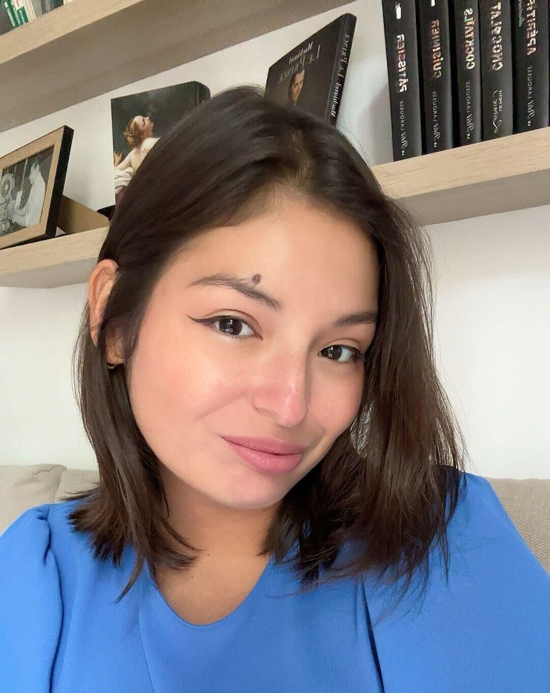
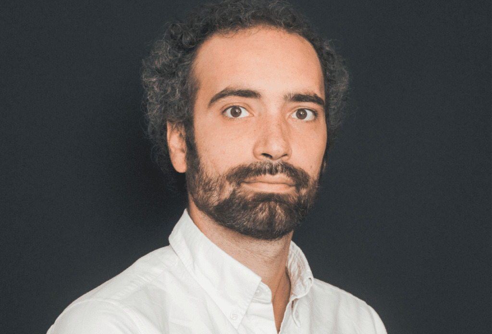

Professeur agrégé de mathématiques et créateur de contenus pédagogiques, il est connu pour ses vidéos éducatives qui aident des millions d'élèves à comprendre les maths.
Professeur d'anglais, il accompagne les étudiants dans l'amélioration de leur expression orale et écrite ainsi que dans la compréhension de l'anglais professionnel.
Professeur de physique-chimie, il est spécialisé dans l'exploration des phénomènes naturels et l'explication des lois de la nature.
Professeur de mathématiques, il est connu pour son approche innovante et son engagement envers l'excellence pédagogique.

Professeur de français, elle est spécialisée dans l'analyse littéraire et l'enseignement de la culture française.
Professeur d'histoire-géographie, elle est connue pour son approche interactive et son engagement envers l'apprentissage actif.
Professeur de philosophie, il est connu pour son approche critique et sa passion pour l'apprentissage actif.
Professeur d'économie, elle est spécialisée dans l'analyse des marchés et l'enseignement de la gestion.
Professeur de magie, il est connu pour son expertise en potions et ses méthodes pédagogiques innovantes.
Professeur de cuisine, il est connu pour ses recettes délicieuses et son approche créative en pâtisserie.
Professeur de physique, il est connu pour ses contributions révolutionnaires à la compréhension de l'espace et du temps.

Professeur de physique-chimie, elle est connue pour ses découvertes en radioactivité et ses contributions à la science.